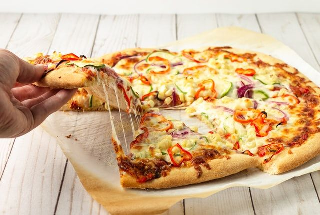

Pizza végétarienne
Préparation: 10 minutes
Cuisson: 15 minutes
Ingrédients
-
1 pâte à pizza

-
100 mL de sauce à pizza
-
115 g de champignons
-
2 saucisse de blé (seitan)
-
1 poivron
-
2 t de fromage gouda
-
null feuilles de basilic
Instructions
Préchauffer le four à la température recommandée pour la pâte à pizza.
Étaler la pâte à pizza sur une surface farinée.
Étaler la sauce à pizza sur la pâte.
Répartir les champignons, les saucisses de blé et le poivron sur la pizza.
Saupoudre le fromage gouda râpé sur les ingrédients.
Garnir de feuilles de basilic frais.
Cuire au four pendant 15 minutes jusqu'à ce que le fromage soit doré.